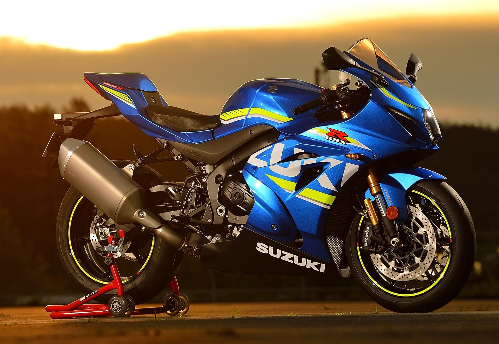

Las motos de stunt son motocicletas diseñadas para realizar acrobacias y trucos espectaculares. Estas motos suelen tener características específicas que las hacen ideales para este tipo de actividades, como un diseño resistente, una suspensión ajustable y un motor potente.
Algunas de las mejores motos para stunt incluyen la Suzuki GSX-R1000, la Kawasaki Ninja ZX-10R y la Yamaha YZF-R1. Estas motos son conocidas por su rendimiento excepcional y su capacidad para realizar trucos impresionantes.
Además, es importante mencionar que la práctica del stunt riding puede ser peligrosa y requiere habilidades avanzadas. Siempre es recomendable usar equipo de protección adecuado y practicar en lugares seguros y legales.
El stunt es una disciplina que consiste en realizar acrobacias y trucos con motocicletas. Esta actividad se ha vuelto cada vez más popular en los últimos años, y muchos motociclistas la practican como una forma de entretenimiento y expresión personal.
El stunt riding puede incluir una variedad de trucos, como wheelies, stoppies, y saltos. Estos trucos requieren habilidades avanzadas y un profundo conocimiento de la motocicleta.
Es importante recordar que el stunt riding puede ser peligroso y debe practicarse con precaución. Siempre es recomendable usar equipo de protección adecuado y practicar en lugares seguros y legales.
